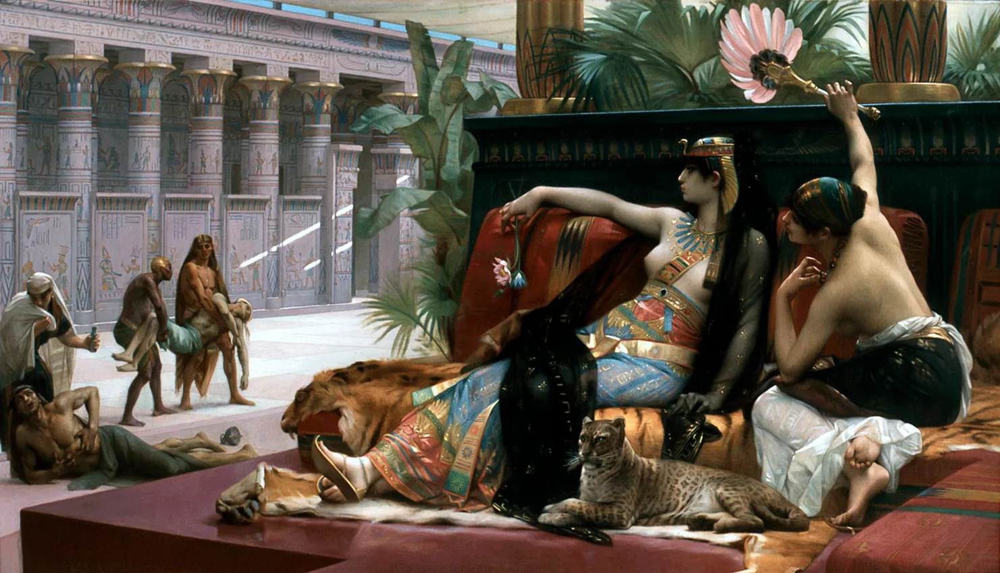
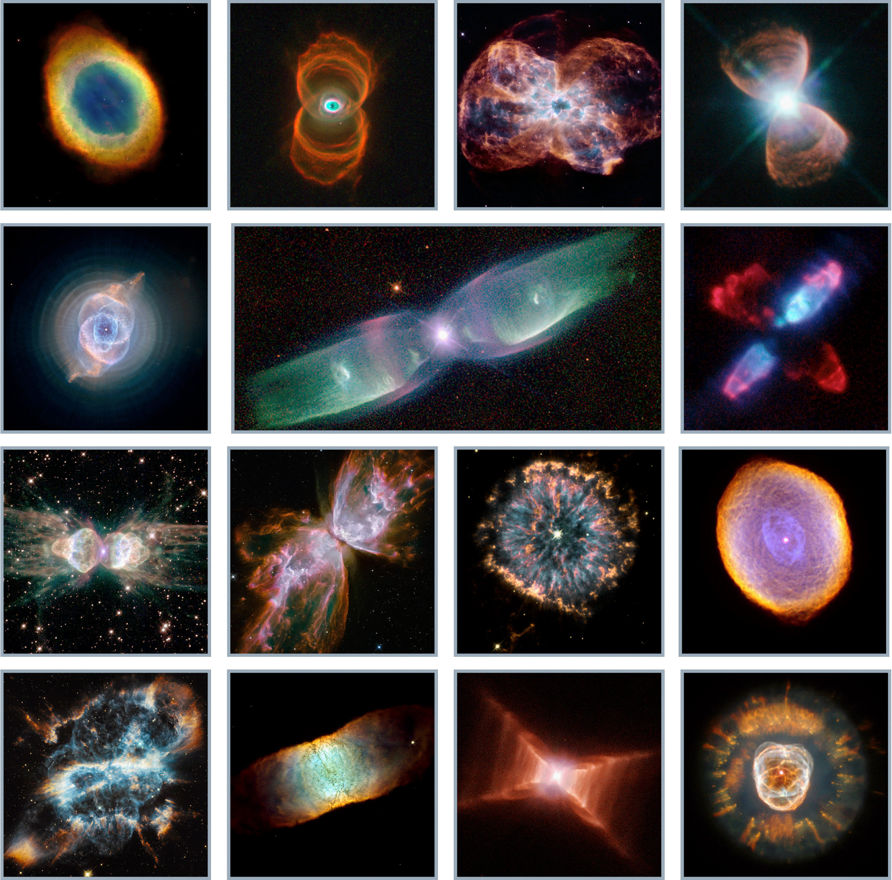

Morality and Death

A lot of people are unable to accept the fact that we are just another animal living on this planet. The main things that differentiates us from others is our unique cognitive abilities and the ability to defy our instincts. But just like other animals our time on earth is limited.
Religions played a major role in linking morality with death and instigating the false belief of our superiority over other living beings.
Many religions base their importance of moral actions on how they impact what happens to you in the afterlife, whether that is a concept of Heaven or Karma.
Today in most cultures, death is perceived as something to be dreaded however all these implications assigned to death are intrinsically human and the attempt to define and enforce morality is solely a humanitarian endeavor.
Death is Universal
Death is universal, be it life on earth or the stars, our deaths are inevitable. In both these cases, the identity of the 'thing' which had undergone death simply changes.
Our Biological Death
The brain is composed of billions of neurons interconnected and constantly forming new connections while modifying previous ones. A single neuron has a simple function i.e. to transmit a nerve signal to the next neuron but when many come together a concious mind emerges.
It is often observed that people whose parts of brains are severed in accidents or surgically removed loose the functions associated with the lost portion whereas those who suffer from Dementia slowly loose various functions which results in a decline in thinking, memories and daily activities. Patients with brain deaths are medically declared dead. Their bodies may continue to function on life support systems but the person no longer exists.
Death occurs when neurons slowly start shutting down and the conciousness that emerged from them simply cease to exist along with the various biological processes that once sustained it.
Eventually our bodies will be decompose by microorganism and the atoms that once composed us which we aquired through food will simply move on to be a part of something else.
Therefore the only thing that will truely cease to exist after our deaths is our conciousness.
Death of the Stars

The astounding variety and amazing complexity of planetary nebulas captured by Hubble.The stars die in different ways depending on their mass. Smaller stars like the Sun will expand into red giants and eventually shed their outer layers to form planetary nebulas, leaving behind a white dwarf, while massive stars will explode in supernovae, leaving behind neutron stars or black holes.
A beautiful interactive representation of a star's death can be found here : Star Death: Helix Nebula
Isn't it ironic that I find theses nebulas after the death of the stars to appear more beautiful than the stars themselves.
The Future
Death will continue to influence our lives for the time immemorial and our morality will continue to haunt us with big questions that science or philosophy cannot answer.
I am excited to see what all will science reveal about death and various other phenomenon in my short lifetime.
Reference
Pyszczynski, Tom, and Pelin Kesebir. “Culture, Ideology, Morality, and Religion: Death Changes Everything.” ResearchGate, Jan. 2011, https://www.researchgate.net/publication/228172741_Culture_Ideology_Morality_and_Religion_Death_
The Death Throes of Stars, NASA, https://science.nasa.gov/mission/hubble/science/science-highlights/the-death-throes-of-stars/